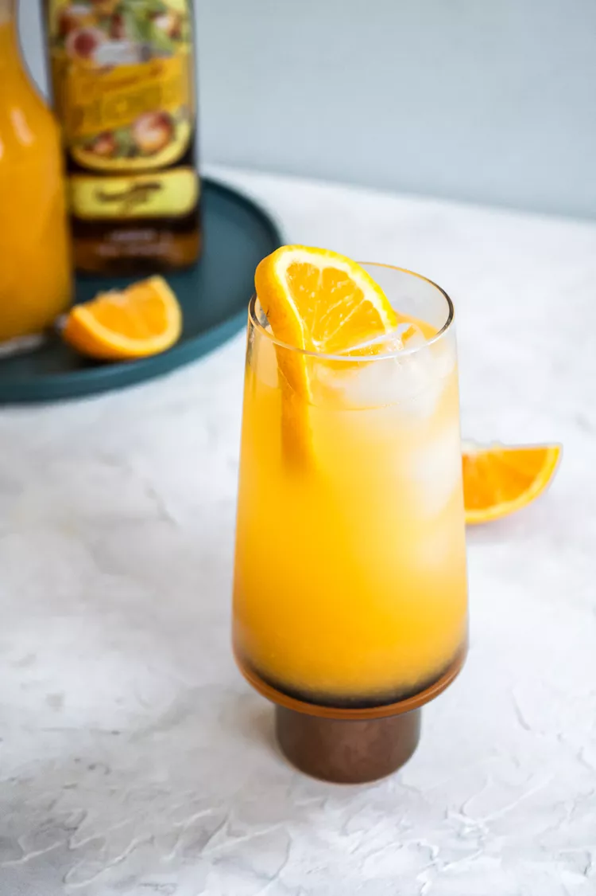

Reimagine your brunch cocktails with this fun blast from the past! The fuzzy navel cocktail combines freshly squeezed orange juice with peach schnapps for a fruity, low-ABV drink recipe.
If I were to offer up a round of fuzzy navels, you might feel like you’ve warped back to the world of ‘80s bartending culture—neon evenings replete with Tom Cruise tossing bottles in the air like a monkey at the zoo.
But I invite you to rethink the fuzzy navel with one simple word: brunch! Because, in essence, the fruity cocktail is just a cousin to the mimosa.
In the mid-1980s, flavored, sugary drinks became the norm for bar-goers. Bartender Ray Foley (yes, the same gent who brought us the best-selling book “Bartending for Dummies”) helped DeKuyper launch Peachtree Schnapps into history with the crowd-pleasing fuzzy navel.
“Fuzzy” refers to the fuzz found on a peach, and “navel” is a reference to the type of orange that Foley cut up to garnish his creation.
A fuzzy navel is a highball consisting of just 2 ingredients: orange juice and peach schnapps.
Let’s circle back to brunch, the ultimate excuse to batch up pitchers of cocktails! If you’re asking yourself if a fuzzy navel can be served up pitcher-style for a buffet or large party, the answer is absolutely.
Simply multiply the serving size you need by the ingredients below (for example, if you want to serve 6 guests 2 drinks each for a total of 12 drinks, you will need 48 ounces of orange juice and 24 ounces of peach schnapps). Let guests fill up their own glasses and serve orange wheels on the side for garnish.
In a highball glass filled 2/3 with ice, pour in the orange juice and the peach schnapps. Gently stir to combine.
Garnish with the orange wheel and serve.